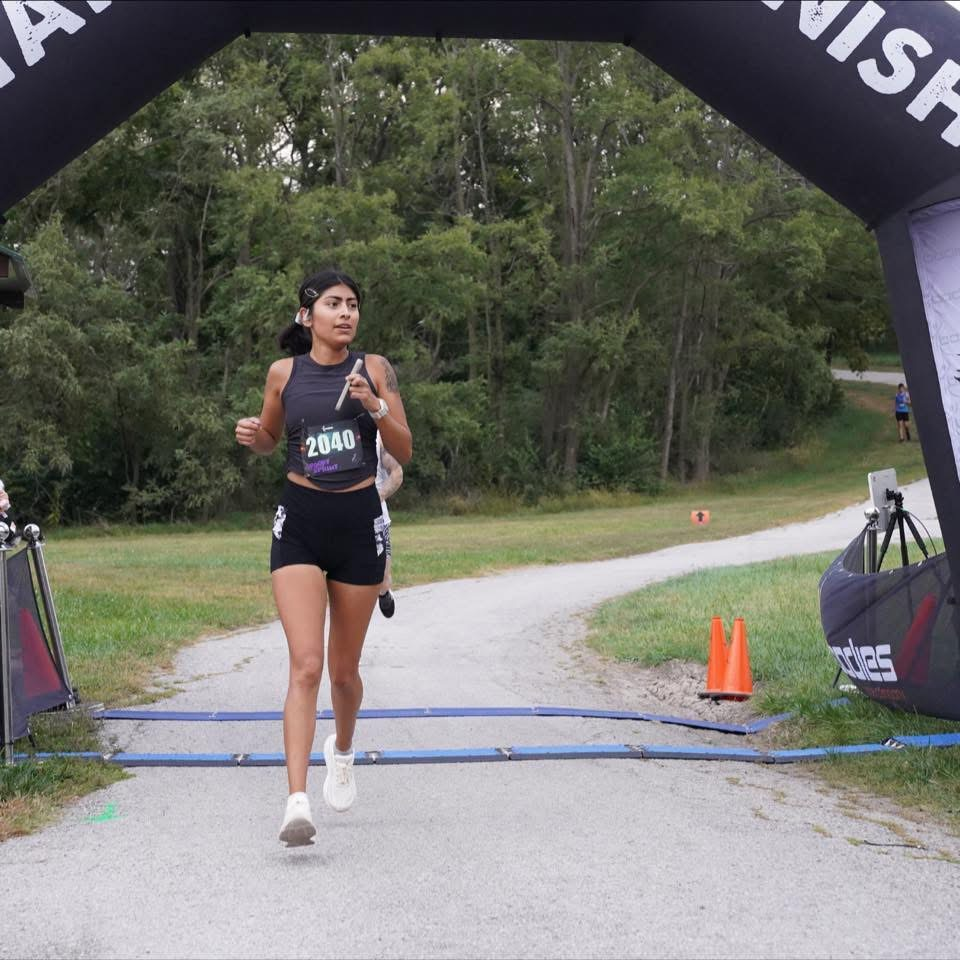
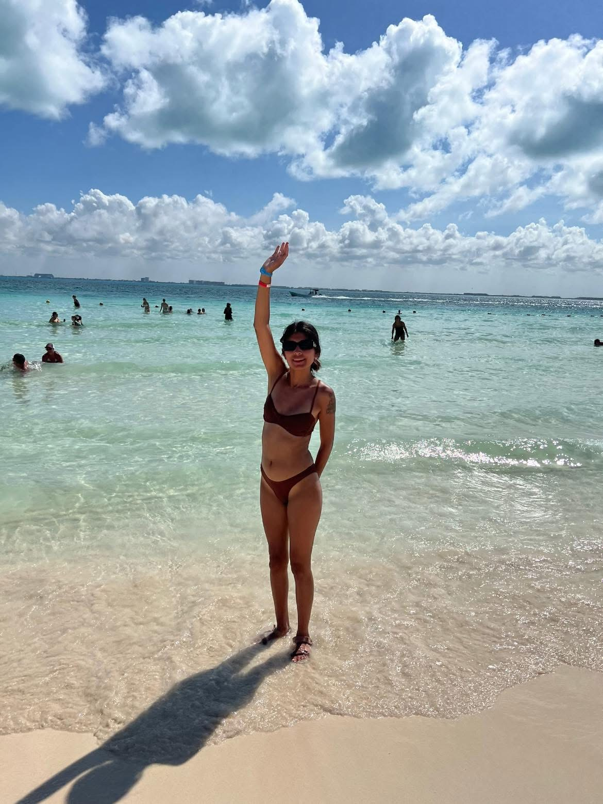
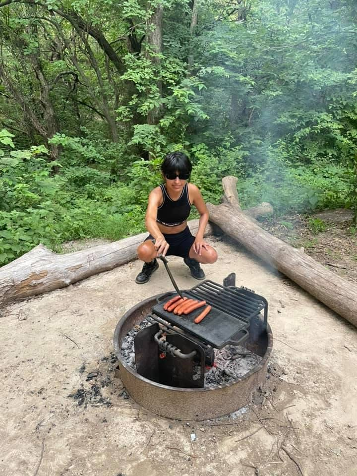

Life Outside of Education
Outside of her career and doctoral studies, Maritza enjoys staying active, traveling, spending time outdoors, playing volleyball, and spending time with friends. These activities give her opportunities to recharge, challenge herself, and create balance in her life.
Running

Running is one of the ways Maritza challenges herself outside of work and school. She has completed several races and marathons. Training requires consistency, discipline, and the ability to continue working toward a goal over time.
Travel

Maritza enjoys traveling and experiencing new places. Travel gives her an opportunity to step away from the demands of her career and doctoral studies while making time for new experiences and personal enjoyment.
Outdoors and Personal Time

Spending time outdoors is another way Maritza creates balance outside of her professional responsibilities. Along with volleyball and time with friends, outdoor activities allow her to stay active and enjoy experiences beyond work and school.